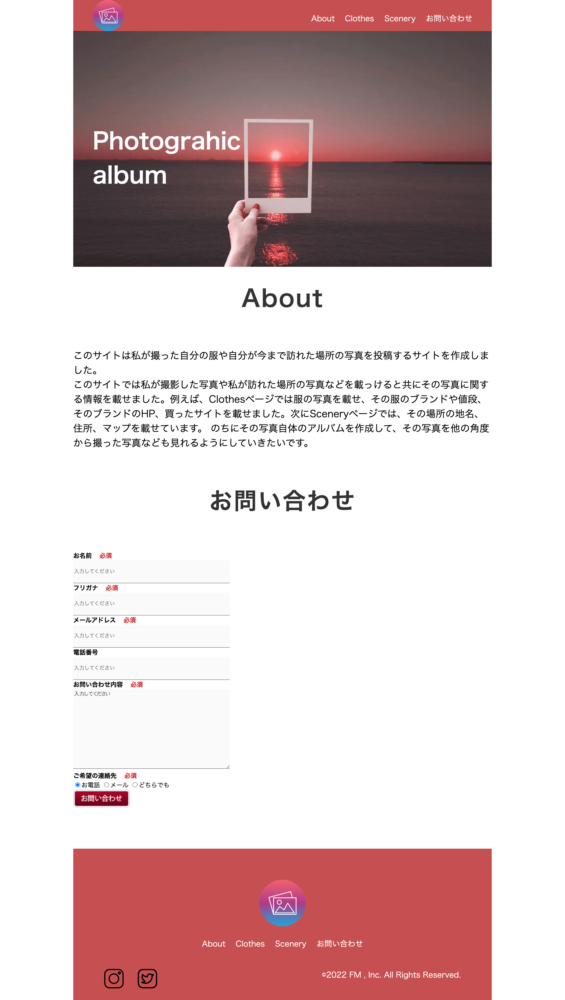

3ページから構成される私の写真集サイトです。
URL
https://fujimoto43.github.io/photogram.html
担当
コーディング
サイトの目的
写真集サイト
使用技術
HTML/CSS/JavaScript/jQuery
デザインについて
WEBサイトの色に関しては暖色系の色を採用しました。理由は暖色系で彩度が高い色は、興奮感を与える効果があるのでこのサイトを見てみたいという印象を与えられるのではないかと考えたためです。また、ただ赤なのではなく少し淡い色にすることによって堅く見せています。
色以外に関しては、上部メニューを押したときの自動スクロール処理やお問い合わせフォームは私のメールへ送信される処理を実装しています。
コーディングについて
PCのWebサイト制作はもちろんですが、現在はスマートフォンで表示しても崩れないように今スマートフォン用のレイアウトを作成中です。